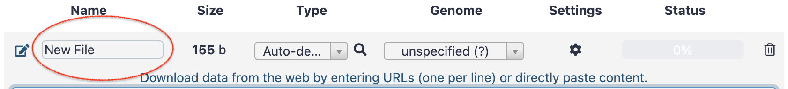
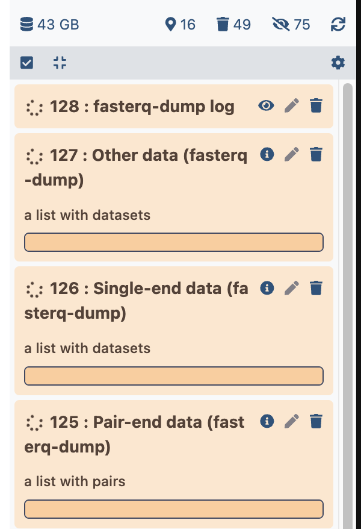

Upload of PRJNA630433 data in  ¶
¶
For this use case, we need three types of datasets:
- The fastq files, which are stored at the EBI SRA in a specific compressed format, the small read archive (sra) format.
- The appropriate GTF annotation file corresponding to the Mus musculus genome version GRCm38 (which is strictly synonymous of mm10)
- The genome GRCm38 in a fasta format. Indeed it is not necessary to fetch this genome because Galaxy servers can store genomes and make it available server-wide to all its users. Thus, your ARTbio Galaxy server already provides you with the reference genome GRCm38.
We will take benefit from these requirements to review below the various ways of uploading data in your Galaxy account.
 Importantly, it will also be an opportunity to practice a little on an important
aspect of bioinformatics analyses: the skills needed to access reliable genomic datasets
by visiting and mastering reliable public databases/repositories. Here, for the moment,
we will focus on two sources: the Ensembl website and
the EMBL's European Bioinformatics Institute (EBI) Small Read
Archive (SRA)
Importantly, it will also be an opportunity to practice a little on an important
aspect of bioinformatics analyses: the skills needed to access reliable genomic datasets
by visiting and mastering reliable public databases/repositories. Here, for the moment,
we will focus on two sources: the Ensembl website and
the EMBL's European Bioinformatics Institute (EBI) Small Read
Archive (SRA)
Upload data from your local computer¶
The first way to get input data in your Galaxy account is to transfer them from your local computer to Galaxy.
Note that whereas this mode may be convenient if you have already the data on your computer, it is pretty inefficient: it implies 2 transfers of data, first from the data source to your computer, secondly from your computer to Galaxy. When it comes to large files, as it is the case here with the fastq file collection of PRJNA630433, it matters a lot !
Therefore, we will illustrate the upload from computer with the case of the GTF file which has a "reasonable" size.
 Get a mus musculus GTF file from Ensembl¶
Get a mus musculus GTF file from Ensembl¶
- First Go to the Ensembl portal page
- We are going to work with the mus musculus genome. Thus, click the Mouse button on the page, which is linked to this URL
- As of the date this doc is written, the current version of the mus musculus genome
assembly is GRCm39 (GCA_000001635.9). However, you will see in this current landing page
a menu to select older assembly version, including the previous one GRCm38 (Ensembl release
102) which is already selected in the menu
Other reference assemblies: just click on theGobutton ! -
The color of the page background will change to brown (archive area) and you will see in the top-right panel, a link to Download
GTF or GFF3 files for genes, cDNAs, ncRNA, proteins.- if you click directly this link you may have a pop up alert warning you that an helper
application for ftp download will take in charge the next (downloading) step. This may be
Filezilla, or Cyberduck or any application which you have on your computer and that is
recognized as being able to take in charge
ftp://links.
If it works for you, go for it ! In this helper application, you will see the content of an archive directory. Select the GTF fileMus_musculus.GRCm38.102.chr.gtf.gz(be carreful because file names are very similar...), and ask your ftp application to download it on your computer. - However, it is well possible that you do not have (yet) a helper ftp application, or
that the communication between your navigator and this helper ftp application does not
work properly. In this case you are in a kind of dead end...
No worries, there is a simple turn around !
Instead of clicking the link DownloadGTF or GFF3 files for genes, cDNAs, ncRNA, proteins, only copy it (using the right-click button of your mouse).
Then, copy the link in a new browser window/tab and edit it, fromftp://ftp.ensembl.org/pub/release-102/gtf/mus_musculus/tohttps://ftp.ensembl.org/pub/release-102/gtf/mus_musculus/(did you see the subtle difference ? ) and press the Enter key to navigate to this edited URL.
) and press the Enter key to navigate to this edited URL.
Here, you should see the content list of the directoryIndex of /pub/release-102/gtf/mus_musculuswhich looks like:Name Last modified Size Description Parent Directory - CHECKSUMS 2020-10-28 13:45 225 Mus_musculus.GRCm38.102.abinitio.gtf.gz 2020-10-27 00:25 3.2M Mus_musculus.GRCm38.102.chr.gtf.gz 2020-10-27 00:08 32M <---- [Mus_musculus.GRCm38.102.chr_patch_hapl_scaff.gtf.gz 2020-10-27 00:11 32M Mus_musculus.GRCm38.102.gtf.gz 2020-10-27 00:08 32M README 2020-10-27 00:12 9.2K
Now, you have just to click the right GTF file: Mus_musculus.GRCm38.102.chr.gtf.gz
- if you click directly this link you may have a pop up alert warning you that an helper
application for ftp download will take in charge the next (downloading) step. This may be
Filezilla, or Cyberduck or any application which you have on your computer and that is
recognized as being able to take in charge
Last recommendation: it is not necessary to uncompress the Mus_musculus.GRCm38.102.chr.gtf.gz.
Leave it as is on your computer.
Upload the GTF file to your Galaxy account.¶
- Navigate to your Galaxy account
- Create a new history (the
 button at the top right corner)and name it
button at the top right corner)and name it
PRJNA630433 input data - Click the
upload dataicon at the top of the left bar. - Select
Choose local files - Select your local
Mus_musculus.GRCm38.102.chr.gtf.gzfile in the menu - Press "Start", then "Close" buttons.
This is it. Your download should start in the history menu and the dataset will turn green when is is complete.
Upload data by URL to Galaxy¶
By the way, do you know what URL means ?
A URL (Uniform Resource Locator) is a unique identifier used to locate a resource on the Internet. It is also referred to as a web address.
Indeed, we can directly transfert the Drosophila_melanogaster.BDGP6.95.gtf.gz from its primary location in the Ensembl database server to your Galaxy History. This is one transfer less !
-
Copy the URL of the GTF Mus_musculus.GRCm38.102.chr.gtf.gz Note that this can be either the FTP URL or the HTTPS URL
-
Paste it in the
Paste/Fetch datatab of the Galaxy upload interface. - Press the
startbutton, then theclosebutton.
It really is better, isn't it? 
However, this does not exempt you from providing Galaxy with the correct URL! This is why we took our time to explain how to access the appropriate GTF file on the Ensembl website.
Upload data using multiple URLs¶
We have also to upload 12 fastq files which are deposited in the EBI SRA.
Retrieve information from the EBI SRA.¶
Let's first have a look to the EBI SRA database of NGS sequence read files.
If you enter
In the accession search box of the SRA homepage, you will land here, where a table displayed at the bottom, which contains information about all samples of the study. Note that by defaults, only the first 10 samples are shown. If you want to see, in our case, the 2 remaining samples, you have either to click thenext arrow button, or change the number of items displayed by
page.
If you click the download report - TSV link, you will download the table with the fields
as displayed on the page. However, looking carefully at the table, you'll see that the displayed
fields are not all what we need. Some fields are not useful (for instance Study Accession,
Sample Accession, Experiment Accession, Tax Id, Scientific Name), whereas a field is
notoriously missing: the one that describe to which replicate of DC, MPO or OC cells
correspond the sequencing runs.
No worry, you can customize the fields displayed in the table by clicking the link Show
Column Selection.
Here, uncheck all boxes and recheck only run_accession, sample_title and fastq_ftp.
Then click the download report - TSV link and retrieve the useful information as
a tsv (tabulation separated values) file, which looks like below:
run_accession fastq_ftp sample_accession sample_title
SRR11688222 ftp.sra.ebi.ac.uk/vol1/fastq/SRR116/022/SRR11688222/SRR11688222.fastq.gz SAMN14836341 Mo rep2
SRR11688221 ftp.sra.ebi.ac.uk/vol1/fastq/SRR116/021/SRR11688221/SRR11688221.fastq.gz SAMN14836342 Dc rep2
SRR11688228 ftp.sra.ebi.ac.uk/vol1/fastq/SRR116/028/SRR11688228/SRR11688228.fastq.gz SAMN14836335 Dc rep4
SRR11688227 ftp.sra.ebi.ac.uk/vol1/fastq/SRR116/027/SRR11688227/SRR11688227.fastq.gz SAMN14836336 Mo rep4
SRR11688218 ftp.sra.ebi.ac.uk/vol1/fastq/SRR116/018/SRR11688218/SRR11688218.fastq.gz SAMN14836345 Dc rep1
SRR11688219 ftp.sra.ebi.ac.uk/vol1/fastq/SRR116/019/SRR11688219/SRR11688219.fastq.gz SAMN14836344 Mo rep1
SRR11688220 ftp.sra.ebi.ac.uk/vol1/fastq/SRR116/020/SRR11688220/SRR11688220.fastq.gz SAMN14836343 Oc rep1
SRR11688223 ftp.sra.ebi.ac.uk/vol1/fastq/SRR116/023/SRR11688223/SRR11688223.fastq.gz SAMN14836340 Oc rep2
SRR11688224 ftp.sra.ebi.ac.uk/vol1/fastq/SRR116/024/SRR11688224/SRR11688224.fastq.gz SAMN14836339 Dc rep3
SRR11688225 ftp.sra.ebi.ac.uk/vol1/fastq/SRR116/025/SRR11688225/SRR11688225.fastq.gz SAMN14836338 Mo rep3
SRR11688226 ftp.sra.ebi.ac.uk/vol1/fastq/SRR116/026/SRR11688226/SRR11688226.fastq.gz SAMN14836337 Oc rep3
SRR11688229 ftp.sra.ebi.ac.uk/vol1/fastq/SRR116/029/SRR11688229/SRR11688229.fastq.gz SAMN14836334 Oc rep4
filereport_read_run_PRJNA630433_tsv.txt
to filereport_read_run_PRJNA630433.tsv) with your spreadsheet software, it is also easy
to generate three additional tables, which will be useful to you later.
The first one is a single list of fastq.gz URLs ( you have to had https:// at
the beginning of each line):
Table 1
https://ftp.sra.ebi.ac.uk/vol1/fastq/SRR116/022/SRR11688222/SRR11688222.fastq.gz
https://ftp.sra.ebi.ac.uk/vol1/fastq/SRR116/021/SRR11688221/SRR11688221.fastq.gz
https://ftp.sra.ebi.ac.uk/vol1/fastq/SRR116/028/SRR11688228/SRR11688228.fastq.gz
https://ftp.sra.ebi.ac.uk/vol1/fastq/SRR116/027/SRR11688227/SRR11688227.fastq.gz
https://ftp.sra.ebi.ac.uk/vol1/fastq/SRR116/018/SRR11688218/SRR11688218.fastq.gz
https://ftp.sra.ebi.ac.uk/vol1/fastq/SRR116/019/SRR11688219/SRR11688219.fastq.gz
https://ftp.sra.ebi.ac.uk/vol1/fastq/SRR116/020/SRR11688220/SRR11688220.fastq.gz
https://ftp.sra.ebi.ac.uk/vol1/fastq/SRR116/023/SRR11688223/SRR11688223.fastq.gz
https://ftp.sra.ebi.ac.uk/vol1/fastq/SRR116/024/SRR11688224/SRR11688224.fastq.gz
https://ftp.sra.ebi.ac.uk/vol1/fastq/SRR116/025/SRR11688225/SRR11688225.fastq.gz
https://ftp.sra.ebi.ac.uk/vol1/fastq/SRR116/026/SRR11688226/SRR11688226.fastq.gz
https://ftp.sra.ebi.ac.uk/vol1/fastq/SRR116/029/SRR11688229/SRR11688229.fastq.gz
The second one is a single list of the run_accession IDs
Table 2
The third one is a run_accession / sample_title match table:
Table 3
Use the URL list for a batch upload in Galaxy¶
- Copy the content of the above Table 1
- Paste it as is in the
Paste/Fetch datatab of the Galaxy upload interface. - Press the
startbutton, then theclosebutton.
You will see soon 12 datasets popping up in the right history bar. The datasets will turn green when their upload (from the SRA site) is finished.
Upload SRA datasets using a Galaxy tool¶
A third way to upload the fastq samples is to use the Galaxy tool
Faster Download and Extract Reads in FASTQ format from NCBI SRA
Note that the NCBI and EBI Small Read Archives are mostly synchronised. Therefore, this tool will retrieve the fastq datasets of our use case without problem.
- Copy the content of the above Table 2 and paste it in the
Paste/Fetch datatab of the Galaxy upload interface.
→ Change the content of theNamebox from "New File" to "SRR list"

→ Click theStartthen theClosebuttons.
→ You will rapidly see a new dataset in the history right bar, whose name is "SRR list" and content is what you have pasted in the upload interface.
Thus, the upload interface of Galaxy can also be used to upload pieces of text, in addition to files ! Remember this functionality because it is very useful. - Click on the tool
Faster Download and Extract Reads in FASTQ format from NCBI SRA(you can select it rapidly by typingFaster Downloadin the tool search bar) - In the select input type menu of the tool, select
List of SRA accession, one per line - In the sra accession list menu, select the newly created dataset whose name should
be
SRR list - Click the
Executebutton !
Several datasets will show up in the history right bar, similarly to this (except the datasets numbers):

the dataset lists (three first datasets), will remain empty until the upload is finished.
In contrast, the fasterq-dump log dataset will show progressively blocks of logs similar
to:
When the upload is completed, all 4 datasets will turn green. The you can verify that only
one dataset list is containing the list of SRR datasets: Single-end data (fasterq-dump),
whereas the other lists remained empty.
You can now, and only now, delete the empty datasets and the useless log dataset.
To finish with this tool, you probably noticed that it is much slower in fetching the SRR
fastq files than the standard Galaxy upload interface. The name of the tool is not totally
appropriate . However, if someone gives you directly the list of the SRR identifier,
the tool allows you to retrieve them with a minimum manipulations and without even interacting
with the EBI SRA interface.
Galaxy data libraries: the ultimate "upload" procedure !¶
You might rightly point out that there is no point in asking multiple users to upload the same datasets.
It’s actually a waste of time, energy, and storage space!
To address this issue of effort duplication, Galaxy offers data libraries, where datasets can be stored and available to multiple users.
In preparing this IOC, we uploaded the SRRs of this use case into a data library named
IOC_bulk_RNAseq.
To access this data library and import the SRR fastq files in your histories:
-
Click the menu
Données partagées(Shared data) and select the submenuBibliothèque de Données(Data libraries). -
Navigate to the data library
IOC_bulk_RNAseq -
Navigate to the folder
IOC_bulk_RNAseq / PRJNA630433 / FASTQ files -
Select all datasets
-
Click the
To Historybutton and selectas a Collection -
In the pop up window, leave Collection type as
Listand select your input history in the menu Select history. Note that if instead, you type the name of a new history, an history will be created and fastq datasets will be transfered in this new history. in a new history with this name. -
Click on the
Continuebutton -
In the field
Name, just type a name for you collection such asPRJNA630433 FASTQ collection, and clickCreate collection -
Here we are ! Click the House icon in the very top Galaxy menu (main menu). You should see the new collection of fastq datasets in the history you have selected for its creation.
Super fast isn't it ?